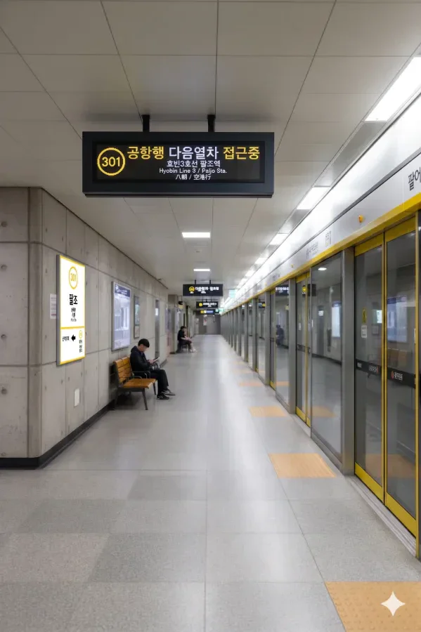

- 1. 개요
- 2. 역 정보
- 3. 역 주변 정보
- 3.1. 출구 정보
- 4. 일평균 이용객
- 5. 승강장
- 5.1. 3호선
- 5.2. 창전선 (개통 예정)
- 6. 연계 교통
- 7. 기타 (루이 성지 원문 보존)
- 8. 여담 (팔조역 7대 전설)
1. 개요
효빈 도시철도 3호선 301번 및 미개통 노선인 창전선 C01번(예정). 효빈광역시 창전구 팔조동 11-19 소재.
현재는 3호선의 서북쪽 시종착역이자 차량기지 인입역이나, 향후 창전선 1단계 구간이 개통되면 모노레일의 기점이 되어 거대한 환승역으로 탈바꿈할 예정이다.
2. 역 정보
효빈 도시철도 3호선의 기점 역할을 하는 역이다. 지하 2층 규모의 상대식 승강장을 갖추고 있으며, 역 북쪽으로는 3호선 전동차들의 요람인 팔조차량기지로 들어가는 인입선이 길게 연결되어 있다.
추후 창전선(모노레일)이 개통되면 지상 2층에 새로운 승강장이 거대하게 들어서게 되며, 지하 2층(3호선)과 지상 2층(창전선)을 잇는 대형 환승 통로가 개설될 예정이다. 이로 인해 창전구 외곽 지역 주민들의 도심 및 부도심 접근성이 획기적으로 향상될 것으로 기대된다.
3. 역 주변 정보
3.1. 출구 정보
  팔조역 출구 정보
팔조역 출구 정보
|
||
|---|---|---|
| 번호 | 주요 시설 및 방향 | 비고 |
| 1 | 팔조차량기지, 효빈철도박물관, 내산초등학교 | 차량기지/박물관 |
| 2 | 팔조동우체국, 시곡초등학교, 모포 아파트 (창전구 팔조동) | 우체국/주거지 |
| 3 |
팔조종합복지관 (팔조동 99), 팔조 노인종합복지관 (팔조동 99) 팔조동행정복지센터, 팔조중학교, 팔조주공 아파트 |
복지/행정 타운 |
| 4 |
창전선 역사 (공사중), 팔조 법과 문화 박물관 빈스마트 팔조점(SSM) (도보 287m) |
창전선 예정지/상업 |
| 5 | 팔조아이르 아파트 (창전구 팔조동), 팔조동 서측 상가거리 | 신규 아파트 |
4. 일평균 이용객
|
팔조역 이용객 통계
| ||
|---|---|---|
| 연도 | 일평균 이용객 | 비고 |
| 2020년 | 6,721명 | |
| 2021년 | 5,501명 | 코로나19 여파 |
| 2022년 | 11,323명 | 수요 회복세 |
| 2023년 | 22,345명 | 철도박물관 리뉴얼 특수 |
| 2024년 | 24,832명 | 이용객 급증 (성지순례 효과) |
5. 승강장
5.1. 3호선

| 당역종착 ↑ | ||||
| 하행 | ㅣ | ㅣ | 상행 | |
| ↓ 투 자 | ||||
| 상행 |
효빈 도시철도 3호선 |
당역 종착 |
| 하행 |
효빈 도시철도 3호선 |
투자 · 효빈국제공항 방면 |
5.2. 창전선 (개통 예정)
| 당역종착 ↑ | ||||
| 하 | ㅣ | ㅣ | 상 | |
| ↓ 신팔조 (예정) | ||||
| 상 |
창전선 |
당역 종착 |
| 하 |
창전선 |
신창전 · 하성천 방면 |
6. 연계 교통
-
[순방향] 팔조역 정류장
- 일반 1, 7, 77, 753
-
[역방향] 팔조역(건너편) 정류장
- 일반 01-1, 07-1, 77-1, 573
7. 기타
역명의 한자 표기가 八潮(팔조) 인데, 씹덕들이라면 눈치챘겠지만 BanG Dream!에 등장하는 밴드 Morfonica의 바이올린 담당 야시오 루이(八潮 瑠唯)의 성과 한자가 토씨 하나 안 틀리고 완전히 똑같다! 노린 건가?
이 때문에 가끔 바이올린 케이스를 멘 방도리 팬들이 성지순례랍시고 찾아와서 역명판을 배경으로 기괴한 포즈로 인증샷을 찍고 가는 참사가 벌어지기도 한다(...). 역무원 : 승객 여러분, 통행에 방해되니 제발 비켜주세요
역 번호가 301번이라서 루이의 생일(11월 19일)이나 키(169cm) 등과 억지로 숫자를 끼워 맞추려는 시도가 있었으나, 아무 관련 없다. 그만 좀 엮어라
모 커뮤니티에서는 이 역 승강장에 루이가 서 있는 고퀄리티 합성 사진이 돌아다녀서, "진짜로 콜라보 했냐", "루이가 왜 효빈광역시에 있냐(?)"는 둥 낚이는 뉴비들이 속출하기도 했다(...). 배경의 칙칙한 콘크리트 벽면과 캐릭터의 위화감이 묘하게 없어서 더 킹받는다는 평.
가끔 심야 시간대에 승강장에서 바이올린 연주 소리가 들린다는 괴담이 있는데, 사실 그냥 옆 사람 이어폰 소리거나 환청이다. 애초에 루이는 이런 시끄러운 곳에서 연주하는 걸 싫어한다 카더라
8. 여담 (팔조역 7대 전설)
8.1. 모포, 팔조아이르, 팔조주공: 팔조동 아파트 삼국지
팔조역 주변의 주거 인프라는 묘한 삼각 구도를 형성하고 있다. 2번 출구 앞의 모포 아파트는 이름부터가 수면욕을 자극하는(...) 푹신한 네이밍으로, 동네 어르신들과 젊은 부부들이 소박하게 섞여 사는 구축 아파트다. 반면 5번 출구 방면에 최근 올라간 팔조아이르 아파트는 번쩍이는 대리석 외관과 고급 커뮤니티 시설을 앞세워 창전구의 신흥 귀족 단지로 군림하려 든다. 그리고 3번 출구 쪽의 근본 대단지인 팔조주공 아파트는 재건축 떡밥만 10년째 굴리며 터줏대감의 낡은 위엄을 유지하고 있다.
이 세 아파트 주민들은 역내 에스컬레이터 선점을 두고 알게 모르게 눈치 싸움을 벌이며, 특히 HAF 시즌에 동네 편의점의 삼각김밥과 몬스터 에너지 드링크를 누가 먼저 싹쓸이하느냐를 두고 대리전(?)을 펼친다는 웃지 못할 밈이 에브리타임과 지역 맘카페를 달구곤 한다.
8.2. 효빈철도박물관의 '합법적 수금'과 팔조역의 위상
1번 출구로 나가면 거대한 팔조차량기지와 함께 효빈교통공사의 자존심이자 현금 박치기(?)의 성지, 효빈철도박물관이 떡하니 버티고 있다. 단순한 철도 유물 전시장인 줄 알고 자녀를 데려온 학부모들은, 입구부터 펼쳐지는 화려한 애니메이션 랩핑 열차와 쏟아지는 공식 한정 굿즈 라인업에 지갑을 영혼까지 털리고 나온다는 전설의 장소다.
특히 3호선과 관련된 굿즈(노란색 라미 키링, 사아야 베이커리 에디션 등)가 발매되는 날이면, 팔조역 1번 출구 에스컬레이터는 새벽 5시부터 오픈런을 뛰는 오타쿠들로 에버랜드 T익스프레스 대기열 뺨치는 헬게이트가 열린다. 팔조역장님은 아예 이들을 통제하기 위해 박물관 전용 유도선을 바닥에 깔아버렸을 정도다.
8.3. 팔조동 99번지의 기적: 팔조종합복지관과 노인종합복지관
3번 출구 앞 팔조동 99번지는 지역 복지의 메카다. 팔조종합복지관과 팔조 노인종합복지관이 거대한 타운을 형성하고 있는데, 이곳 어르신들은 팔조역 특유의 서브컬처 생태계에 완전히 적응해 버린 '인싸'들이다.
복지관 앞 벤치에서 장기를 두던 어르신들이 1번 출구 박물관으로 향하는 코스플레이어들을 보며 "아이고, 저 처자는 머리가 핑쿠색이네. 가발 퀄리티가 기가 맥혀!"라며 전문적인 품평을 하기도 하고, 심지어 손자 주려고 샀다며 가방에서 야시오 루이 아크릴 스탠드를 꺼내 자랑하는 할머니까지 목격된다. 세대 갈등 따위는 찾아볼 수 없는 '팔조동 99번지의 기적'이라 불린다.
8.4. 팔조 법과 문화 박물관의 기묘한 방문객들
4번 출구 방면에 위치한 팔조 법과 문화 박물관은 본래 효빈시의 사법 역사와 딱딱한 법전들을 전시하는 매우 근엄하고 진지한 공간이다. 하지만 팔조(八潮)라는 지명이 루이의 성지라는 이유 하나만으로 상황이 이상하게 돌아가기 시작했다.
원작에서 루이가 항상 '합리'와 '논리'를 따지는 완벽주의자라는 설정 때문에, 과몰입한 팬들이 "루이의 논리적인 사고를 배우겠다"며 이 법 박물관에 단체 관람을 오는 기현상이 발생한 것이다. 헌법재판소 판례집을 굿즈 구경하듯 진지하게 읽고 있는 덕후들을 보며 박물관 큐레이터들은 "법학도가 이렇게 늘었나"라며 헛된 감동의 눈물을 흘린다고 한다.
8.5. 팔조동우체국의 '철덕 & 럽라/방도리 굿즈' 전담 배송반
2번 출구 바로 앞 팔조동우체국 직원들의 포장 및 배송 스킬은 타의 추종을 불허한다. 1번 출구 철도박물관에서 양손 가득 한정판 굿즈와 육중한 기차 프라모델을 쓸어 담은 덕후들이, 도저히 기차나 버스를 탈 엄두가 안 나자 2번 출구 우체국으로 달려가 택배를 부치기 때문이다.
특히 아크릴 스탠드나 피규어 박스의 모서리가 구겨지면 오타쿠들이 박물관 앞에서 통곡을 한다는 사실을 누구보다 잘 아는 국장님은, '굿즈 전용 특수 에어캡 포장 데스크'를 별도로 마련해 두었다. 이 우체국에서 부친 택배는 절대 파손되지 않는다는 믿음이 생겨, HAF 기간에는 옆 동네에서도 굳이 이곳까지 원정 택배를 부치러 오는 진풍경이 벌어진다.
8.6. 빈스마트 팔조점(287m)의 초지관철 마케팅
4번 출구에서 287m 거리에 있는 기업형 슈퍼마켓 빈스마트 팔조점(SSM)은 3호선의 노란색(박라미) 테마 구역 한복판에 떨어져 있는 보라색(빈 마르가레테) 영토다. 마트 간판부터 직원 유니폼까지 쨍한 엘레강트 퍼플로 물들어 있어 멀리서도 눈에 띈다.
빈스마트의 마루빈 본부장(사장의 딸)은 이곳이 야시오 루이의 성지임을 놓치지 않고, 마트 제빵 코너에 아예 '야마부키 베이커리 특제 소라빵'과 '초지관철 크루아상'을 콜라보해서 팔기 시작했다. 마트 스피커에서는 "이 정도 할인에 놀라지 마!"라는 거만한 시보 방송이 흘러나오고, 그 아래에서 동네 아주머니들과 철덕들이 사이좋게 반값 스티커가 붙은 식빵을 쓸어 담는 진정한 자본주의의 현장이다.
8.7. 창전선(C01) 시종착역 확정과 끝없는 공사 소음
현재 4번 출구 앞은 창전선 1단계 구간의 대망의 기점(C01) 역사를 세우느라 거대한 펜스가 쳐져 있고 항타기 소음이 끊이지 않는다. 역 구내 폴사인과 안내도에는 아직 개통도 안 된 창전선 로고 위에 처량하게 회색 수평 취소선 스티커가 발라져 있어 묘한 애잔함을 자아낸다.
팔조동 주민들과 철덕들은 모노레일이 개통되면 환승의 성지가 될 것이라며 잔뜩 기대하고 있지만, 2033년이라는 까마득한 개통 시점 때문에 "내가 저거 타기 전에 관절염으로 눕겠다"는 자조적인 농담이 나돈다. 공사 가림막에는 창전선 마스코트 심세이가 "팔조동, 하늘길은 내가 연다"며 멋을 부리고 있지만, 그 위로 지나가는 3호선 열차의 우렁찬 구동음에 묻혀 존재감이 한없이 작아 보인다는 후문이다.